Use Case
In the real world we have the physical Warehouses where we gather the items
from different places and store them in a single location. The same is the case
of the Data Warehouse also. The data is gathered from different applications
onto a Data Warehouse and then analytics done on top of it to get useful
insights out of the data.
Setting up a Date Warehouse takes a lot of time and effort for setting up. AWS Redshift is a managed Datawarehouse from AWS which makes it easy to setup a Datawarehouse in the AWS Cloud. In this exercise, we would be setting a Redshift Cluster, move a synthetic Airline data from S3 and do some analytics in Redshift.
AWS Redshift falls under the trial version and is free for 2 months from the time the cluster has been created for the first time. When the AWS account was created doesn’t come into a play here. Only a dc2.large node falls under the trial version and that too one node.
https://aws.amazon.com/redshift/free-trial/
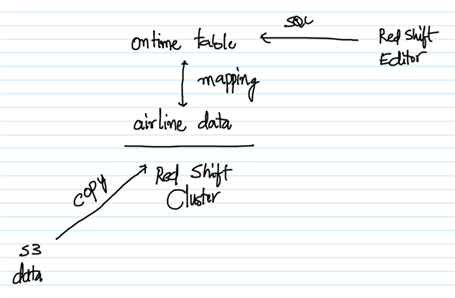
AWS Services: S3 and Redshift
-- Create a file (data.txt) with the below content. Feel free to add more rows to the data. The different attributes in the dataset are year, month, date, actual departure time, scheduled departure time, the origin and the destination airports in the same order. From this data we would be interested in figuring out the best and the worst airports based on the number of flights getting delayed.
2020,1,21,1300,1100,CHI,OHR
2020,5,11,1100,1100,CHI,OHR
2020,6,8,1500,1500,NY,DAL
2020,7,17,1600,1300,NY,DAL
2020,3,16,1530,1520,NY,OHR
2020,4,15,1600,1545,NY,OHR
-- Create a bucket in S3 and upload the data.txt file to it.
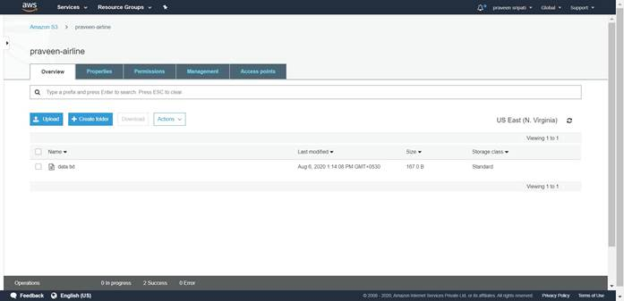
-- Go to the IAM Management Console, click on Roles.
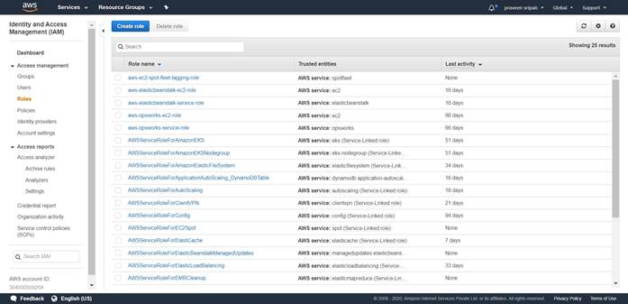
-- Select Redshift as the service which is going to use this role, click on
“Redshift – Customizable” and click on Next : Permissions.
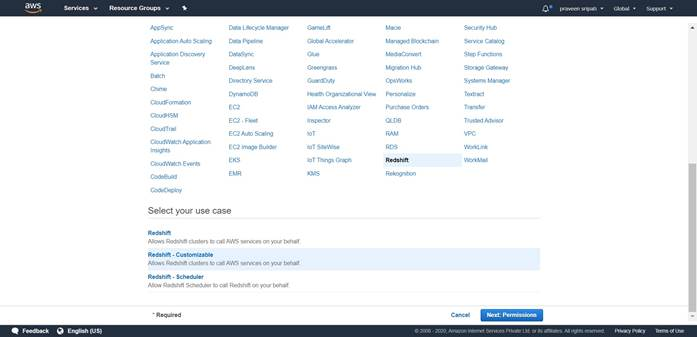
-- Select AmazonS3ReadOnlyAccess Policy from the list and click on “Next : Tags”.
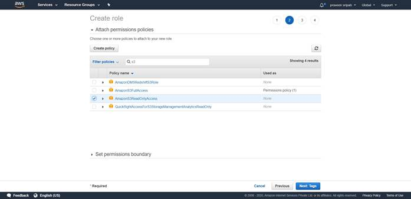
-- Tags are optional and can be skipped. Click on “Next : Review”.
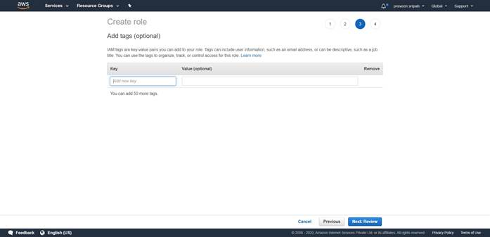
-- Enter the role name as “Role4RedShift-S3RO” and click on “Create role”.
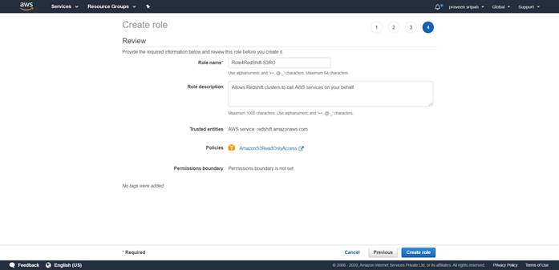
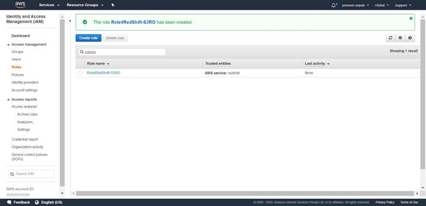
-- Click on the Role and note down the “Role ARN” to be used along with Redshift later.
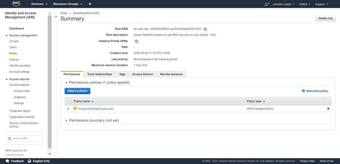
-- Go to the Redshift Management Console and click on “Create cluster”.
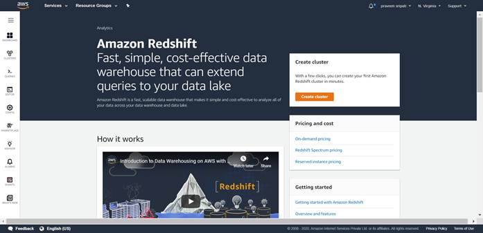
-- Give the cluster a name. Select dc2.large as this falls under the free trial.
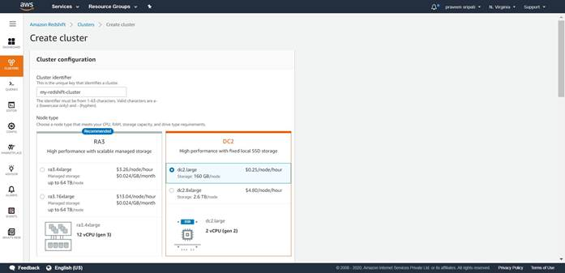
-- Select the number of nodes as 1, again as this falls under the free trial.
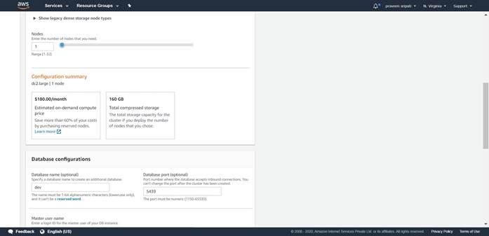
-- Give the username and password, make sure to note it down.
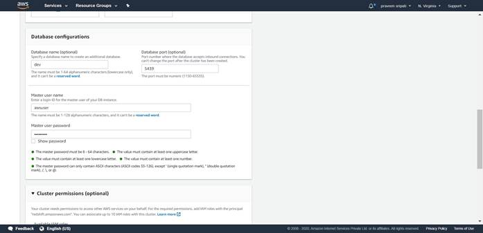
-- Under the “Cluster permissions”, select the IAM Role created in the previous
steps and click on “Add IAM role”.
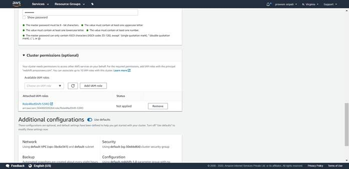
-- The rest of the default options are good enough. Try to explore the different options and click on “Create cluster”.
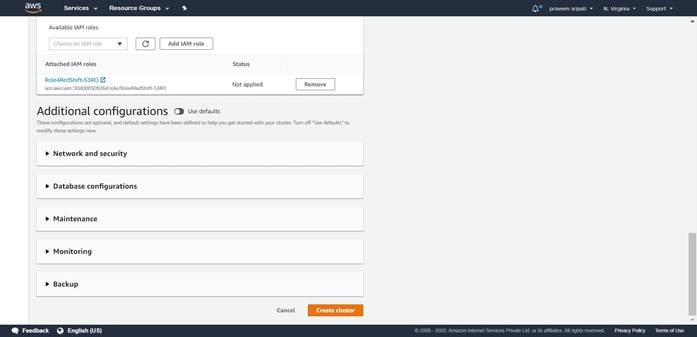
-- Initially the Redshift cluster would be in a creating status. Click on Cluster.
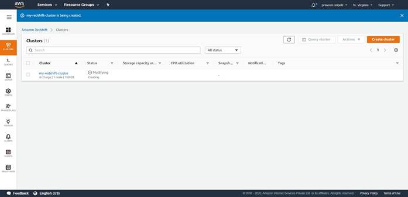
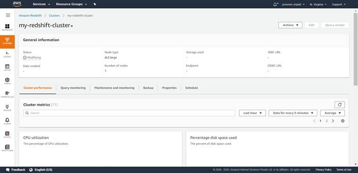
-- Finally, the cluster would be in available status and is ready for the queries to be run in a few minutes.
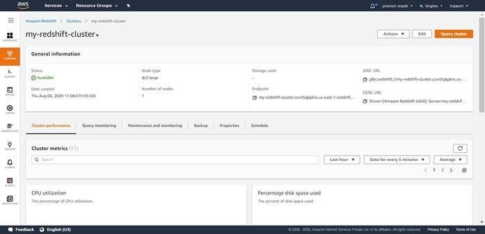
-- Click on the Editor Tab in the left pane. Select the Cluster, enter the
Database name as dev and finally the user and password. Click on “Connect to
database”.
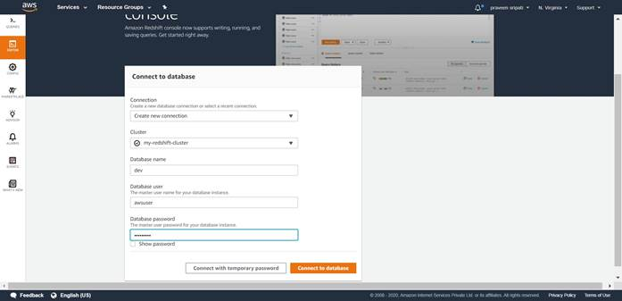
-- In the Query tab, paste the below query and click on Run to create the ontime table.
create table ontime (
Year integer,
Month integer,
DayofMonth integer,
DepTime integer,
CRSDepTime integer,
Origin varchar(120),
Dest varchar(120)
);
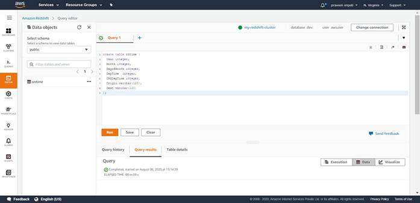
-- Now the table must be populated with the data. Again in the same Query tab, copy the below command and click on Run. Make sure to change the bucket name and the IAM Role ARN. In a few seconds the data in the table will be populated. In the “Query results”, it should say Completed.
copy ontime
from 's3://praveen-airline/data.txt'
iam_role 'arn:aws:iam::304000509264:role/Role4RedShift-S3RO'
delimiter ',' region 'us-east-1';
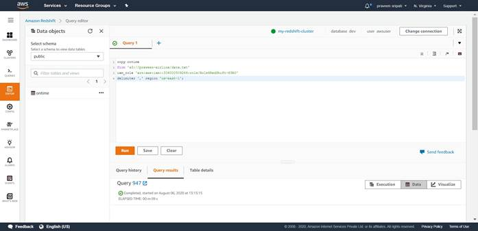
-- In the same Query tab execute the below query to see if the data is
populated.
select * from ontime;
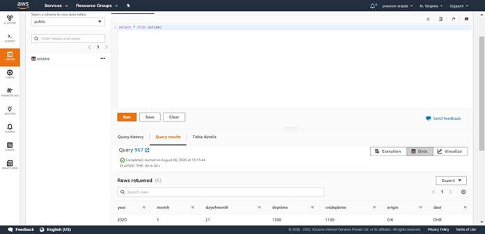
-- Execute the below query to get the number of flights delayed from each of the origin. This will give the best and the worst airports based on the number of flights getting delayed.
select Origin, count(*) as Count from ontime where DepTime > CRSDepTime group by Origin order by Count desc;
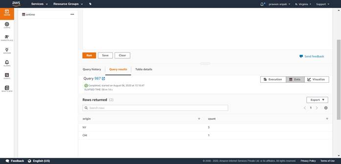
Here we have processed a small amount of data, but Redshift is capable is processing Petabytes of data and can be easily integrated with the existing Business Intelligence Tool like Tableau and other. AWS also provides a BI tool called QuickSight which is a Service from AWS and can be easily integrated with Redshift to do analytics of the data in Redshift.